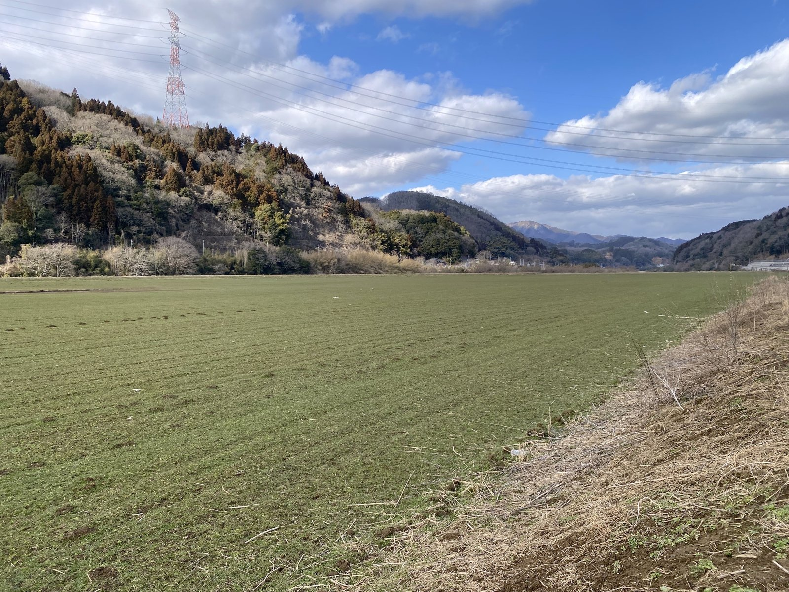
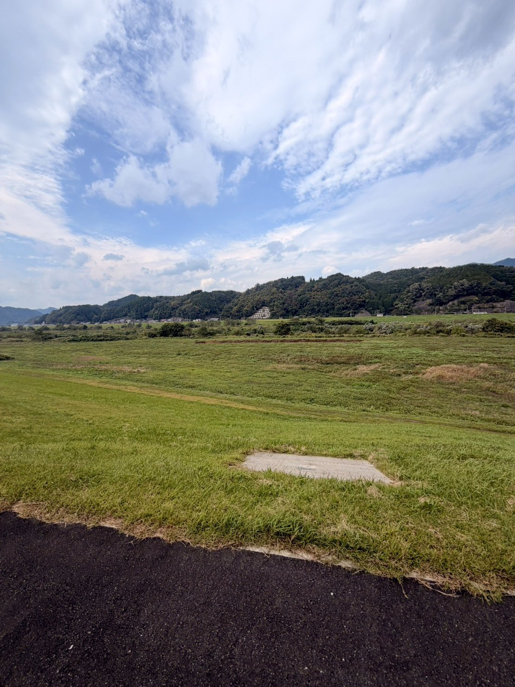
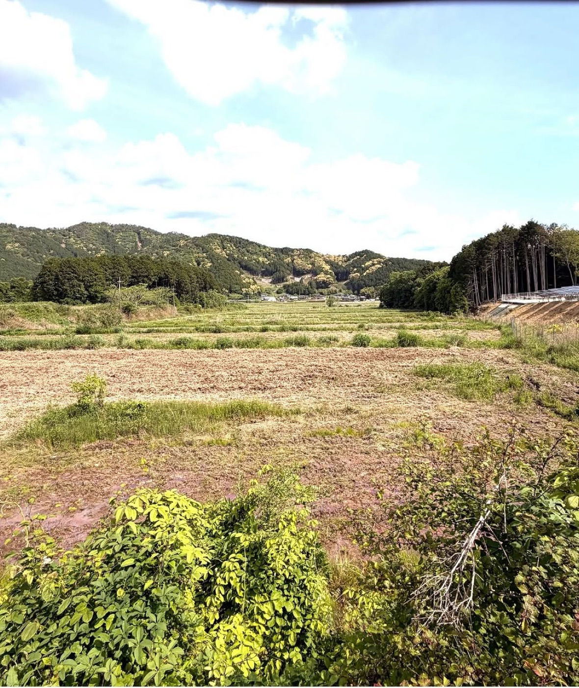
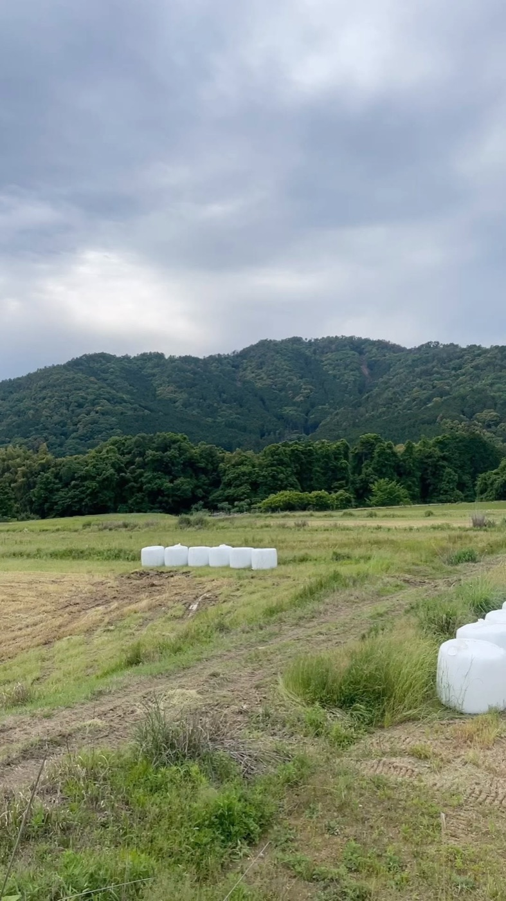
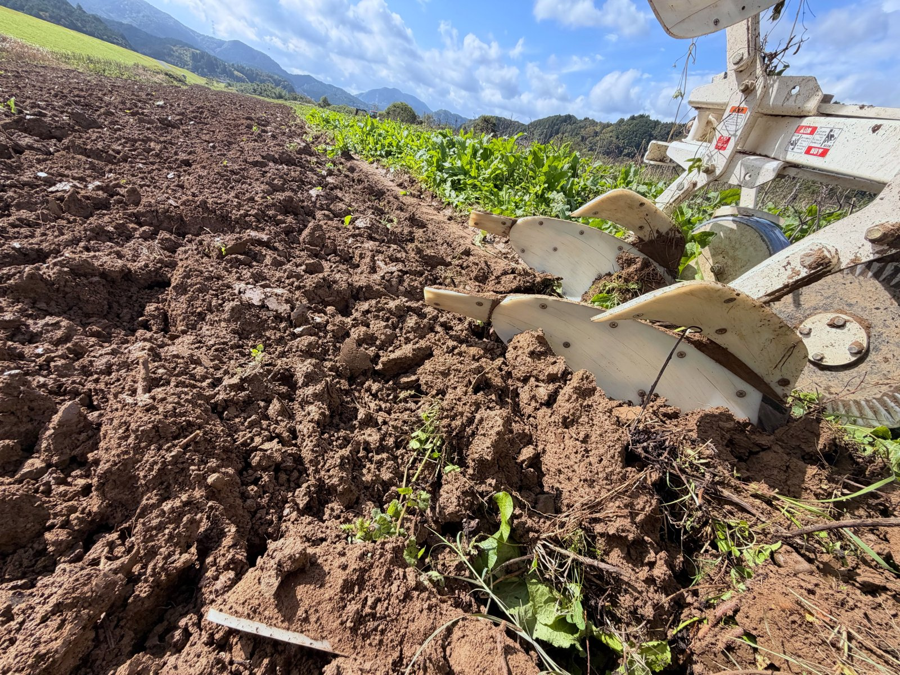
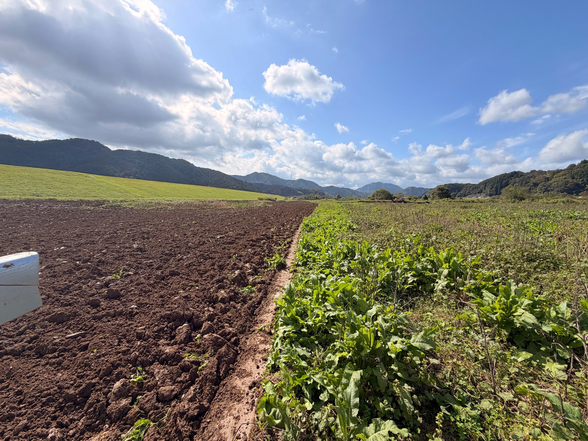

TAMBA DOSHO

兵庫県では、輸入した牧草を買って牛に食べさせている農家さんがほとんどです。昔はこの地域で牧草をつくるのは難しいと言われていましたが、気候や機械が変わったいま、自分たちの手でつくれるようになりました。2026年は、約50haで牧草をつくっています。
私たちは5年前から、母牛の餌を100%自分たちの牧草でまかなうことを目標に取り組んできました。始めたころは牧草を刈る機械もなく、刈払機で刈って手で集め、袋に詰めていました。
見た目だけいい牧草をつくっても仕方がない。牛にも申し訳ない。土から手をかけ、牛がしっかり食べて元気に育つ牧草をつくっています。
田んぼでつくる牧草。母牛の毎日の餌になります。
お米を収穫したあとの稲わらをロールにして、牛の餌に。
牛の餌にするためのお米。2025年から始めました。
牛舎から出る堆肥を、牧草地や田畑の土へ還します。



2〜3mの木や草が生えていた田んぼを、一枚ずつ借りて開き、牧草地に戻しています。水がたまりやすい田んぼでも育つよう、土と葉の両方から手をかけています。

いい土から、いい牧草が育つ。いい牧草を食べて、いい牛が育つ。その牛の堆肥が、また土をつくる。
お米をつくりながら牛の餌もつくり、餌をつくりながら堆肥を使う。輸入飼料の値段や世の中の状況に流されない、強い農業をこの土地でつくっていきます。
牛・牧草・堆肥・米・栗をつなぐ循環型農業について兵庫県の牛の餌を、兵庫県の牧草でまかなうには、私たちだけでは到底間に合いません。そこで、県内の畜産農家さんや農家の方々と「兵庫県自給飼料生産組合」をつくり、一緒に牧草をたくさんつくる取り組みを始めました。
地元の牧草で育てることで、但馬牛・神戸ビーフの価値と牛の健康を高める。牛の堆肥を飼料畑に入れることで、堆肥の行き先がなく牛を増やせないという悩みも解決する。まずは丹波市、そして兵庫県の自給飼料率を、全国平均以上にすることを目指しています。
栗原優介「関わるすべてに喜びを。」 牧草づくりの現場を発信しています